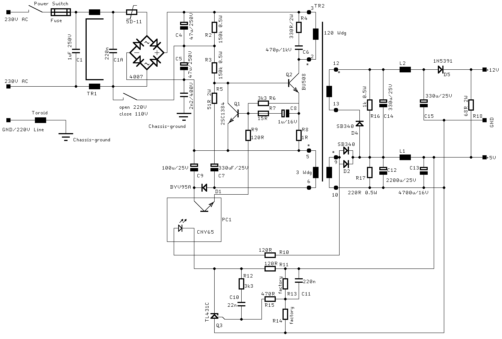

|
|
16.1 PSU 1040 STF
How to repair the 1040STF PSU
So i will have a look to the old psu from a 1040 STF :
R8 is a safety resistor with 1 Ohm in line to a Transistor BU508
(Q2), the driver of the pimary side o the transformer. I think your
psu lost his primary clock.
Check R1, 5D-11 (NTC)!
Check DB1 and are 120V AC IN
C4,C5 (both 47uF/250V) must have around 150VDC and more!
I hope you found the parts on your pcb. If not, you have another
psu!
Don't touch the heat sinks!
If you can't found any defective part, replace the psu.
 Abbildung 1 - Netzteil 1040 STf
Remember that primary power in can be 115AC up to 240AC in. Parts
after transformer are all the same.
|
|
|